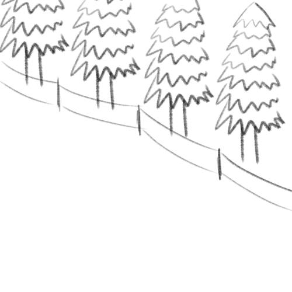

방학이 시작됨과 동시에 부모님이 운영하시는 고깃집에서 알바를 하게 됐다. 하루하루 머리랑 옷이 고기냄새에 쩔어갔고 개강이 그리워지기 시작했다. 지금 생각하면 고깃집이 나았다.
군대에서 우스갯소리로 보드를 잘타는 친구한테 전역 후 보드 배우러 간다고 말해놓고 진짜 갈 줄 몰랐다. 처음엔 굴러도 재밌고 신기했지만 중급자 코스로 올라가면서 구르는게 너무 아팠고 리프트를 탈때 설렘보다 두려움이 더 커졌다.

이번 방학의 종점이라고 볼 수 있는 오사카 여행. 고깃집에서 고기냄새가 배어도 이거만 보고 버텼다. 하루에 10만원 씩 쓴다는 생각으로 5만엔을 환전해 갔지만 너무나도 안일한 생각이였고 결국 20~30만 원 가량을 더 쓰고 왔다.